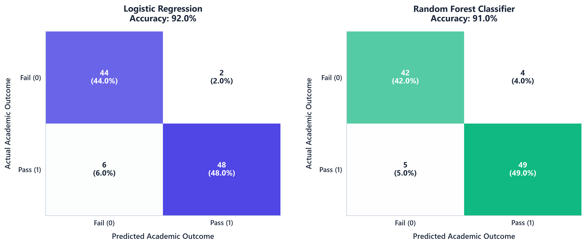
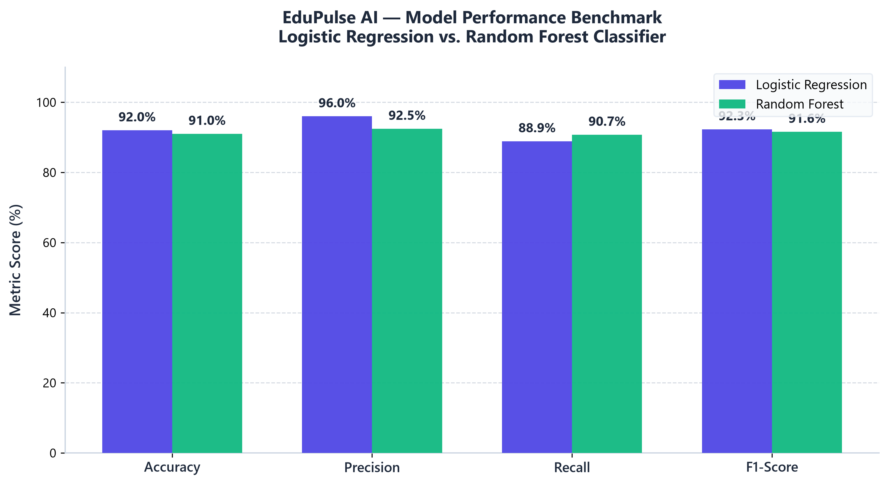
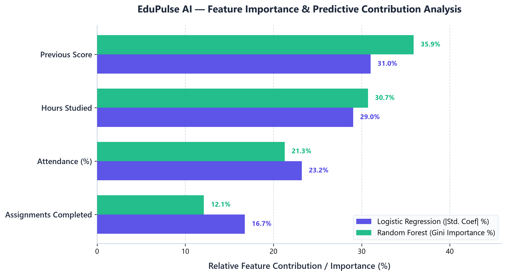
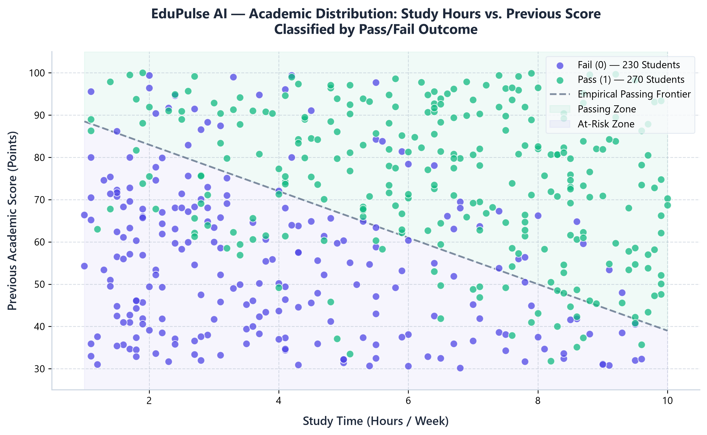

Student Profile Parameters
Adjust indicators to simulate real-time pass/fail risk
Live Model Inference
Logistic Regression Sigmoid Evaluation ($\sigma(\beta^T z + \beta_0)$)
Confusion Matrix Benchmark
Stratified Test Split ($N=100$, 80/20 Stratification)

Model Performance Benchmark
Logistic Regression vs. Random Forest Classifier

Feature Importance & Weights
Random Forest Gini vs. Standardized Logistic Regression

Study Time vs. Previous Score
Cohort Clustering & Empirical Decision Frontier

🎯 Problem Statement
Higher education institutions consistently face high freshman dropout rates and late academic failure due to delayed student risk detection. Traditional midterm evaluations occur too late for meaningful academic interventions. EduPulse AI bridges this gap by offering early, data-driven, continuous pass/fail risk assessment to trigger timely mentoring and tutoring.
🚀 Core Project Objectives
- Train and validate multiple supervised classifiers with $\ge 90\%$ target accuracy.
- Provide complete feature interpretability so educators understand why a student is at risk.
- Achieve zero-infrastructure browser inference running purely on client hardware via GitHub Pages.
Dataset Feature Schema (student_data.csv)
500 Records • 4 Continuous/Discrete Input Features • 1 Binary Target
| Feature Name | Data Type | Valid Range | Mean ($\mu$) | Std ($\sigma$) | Pedagogical Significance |
|---|---|---|---|---|---|
| Hours_Studied | Float | 1.0 – 10.0 hrs/wk | 5.27 hrs | 2.62 hrs | Direct metric of dedicated individual self-study effort. |
| Attendance_Percentage | Float | 50.0% – 100.0% | 74.55% | 14.11% | Indicator of classroom engagement and concept exposure. |
| Previous_Score | Float | 30.0 – 100.0 pts | 66.12 pts | 19.70 pts | Proxy for baseline academic aptitude and foundational knowledge. |
| Assignments_Completed | Integer | 0 – 10 units | 4.86 units | 3.25 units | Consistency in continuous formative assessment. |
| Result (Target) | Binary | 0 (Fail) / 1 (Pass) | 54.0% Pass | 46.0% Fail | Final academic outcome determined by weighted performance formula. |
Model Evaluation Benchmark (Stratified Test Split N=100)
Performance breakdown between Linear Parametric vs. Non-Parametric Ensemble
| Algorithm | Accuracy | Precision | Recall | F1-Score | Confusion Matrix | Inference Latency | Deployment Status |
|---|---|---|---|---|---|---|---|
| Logistic Regression (L2) | 92.00% | 96.00% | 88.89% | 0.923 | TN: 44, FP: 2, FN: 6, TP: 48 | < 0.05 ms | Active in Browser |
| Random Forest (100 Trees) | 91.00% | 92.45% | 90.74% | 0.916 | TN: 42, FP: 4, FN: 5, TP: 49 | ~ 1.2 ms | Benchmark Model |
Dataset Preview (First 15 Rows of student_data.csv)
Raw student data generated by calibrated academic distribution
| # | Hours Studied | Attendance (%) | Previous Score | Assignments | Result |
|---|
End-to-End System Architecture
Complete pipeline from synthetic generation to client-side vector inference
X_train prevents Data Leakage — ensuring test evaluation reflects unseen real-world data.
z_i = (x_i - \mu_i) / \sigma_i. The linear score is computed as logit = \beta_0 + \sum \beta_i z_i. The probability of passing is computed via the Sigmoid activation: P(Pass) = 1 / (1 + exp(-logit)).
model_data.json. The web client loads these static parameters and performs matrix arithmetic directly in vanilla JavaScript, allowing free, infinite-scale hosting on static hosts like GitHub Pages or Vercel.
study_vs_score_scatter.png chart and feature weights ($\beta_{\text{hours}} = 2.75$, $\beta_{\text{score}} = 2.94$), an increase of 2.5 study hours per week can offset a 15-point deficit in previous academic performance, proving that active student effort directly mitigates weaker prior preparation.
Chart Title
Chart Description